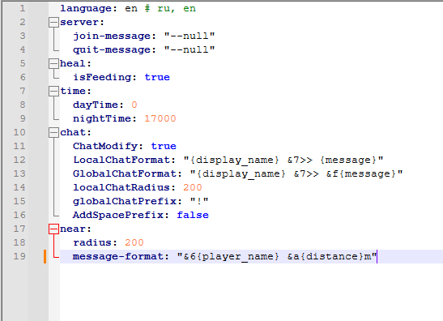

Commands:
/importantz - Main Plugin`s command
/balance - Checks Player`s balance
/broadcast - Sends a message to all players on the server
/burn - Sets the Player on fire
/clear - Clear Player`s inventory
/craft - Opens virtual crafting table
/day - Setts day in world
/delhome - Deletes a home point for the Player
/delwarp - Deletes a warp
/eco - Transactions using the Vault Economy
/enderchest - Opens Player`s ender chest
/ext - Extinguishes Player
/feed - Feeds the Player
/fly - Enable/Disable fly mode
/flyspeed - Setts fly speed for Player
/gm - Changes Player`s game mode
/heal - Heals Player
/home - Teleports the Player to a point at home
/invsee - View Player`s inventory
/kill - Kills player
/lightning - To strike with lightning
/list - View all players on the server
/maintenance - Enables/Disables maintenance mode
/message Sends a message to player
/near - View the list of Players nearby
/nick - Changes Player`s nick
/night - Setts night in world
/rain - Sets rainy weather
/realname - View real Player`s name
/repair - Repairs item in Player`s hand
/sethome - Creates a home point for the Player
/setspawn - Creates a spawn point
/setwarp - Creates a warp
/spawn - Teleports the Player to a spawn point
/speed - Setts walk speed for Player
/sun - Sets sunny weather
/tpacancel - Cancel the teleportation request
/tpaccept - Accept a teleportation request
/tpadeny - Rejects teleportation request
/tpa - Send a teleportation request
/tp - Teleport to Player
/tphere - Teleports Player to yourself
/vanish - Makes Player invisible
/warp - Teleports Player to warp
Configurations:
config.yml:

language - parameter for changing the plugin language
join-server - changes the message when the player join on the server, if the value is "--null", then the message will not be displayed
quit-server - changes the message when the player quit from the server, if the value is "--null", then the message will not be displayed
isFeeding - will the player be feed when prescribing the heal command
dayTime - the value for the time of day
nightTime - the value for the time of night
ChatModify - permission to change the chat
LocalChatRadius - local chat will be active for several blocks
GlobalChatPrefix - the character that must be entered at the beginning of the message to send the message to the global chat
AddSpacePrefix - adding a space between the prefix in the chat and the player's nickname
message:msg-command-prefix - prefix for msg command
broadcast:bc-command-prefix - prefix for bc command
near:radius - the near command will be active for several blocks
maintenance:enabled - enabling the maintenance mode
maintenance:permission - permission to join to the server during maintenance
modules.yml:
economy - economy module enable
homes - homes module enable
warps - warps module enable
spawn - spawn module enable